This is the 1 minute video assesment from Joaquin Atienza, the video is a life Hack Video in .mp4 video format, it was film at Madrid, the video consist on 4 hacks with plastic bottles.
My name is Joaquin Atienza and in this document I will show evidence of my planning, pre-post production work and details on how the work was done.
In the first step I did the planning, as it was going to be a quick video I did it in paper. There where ten step I would be marking as they were completed. You can check my planning on the image below.
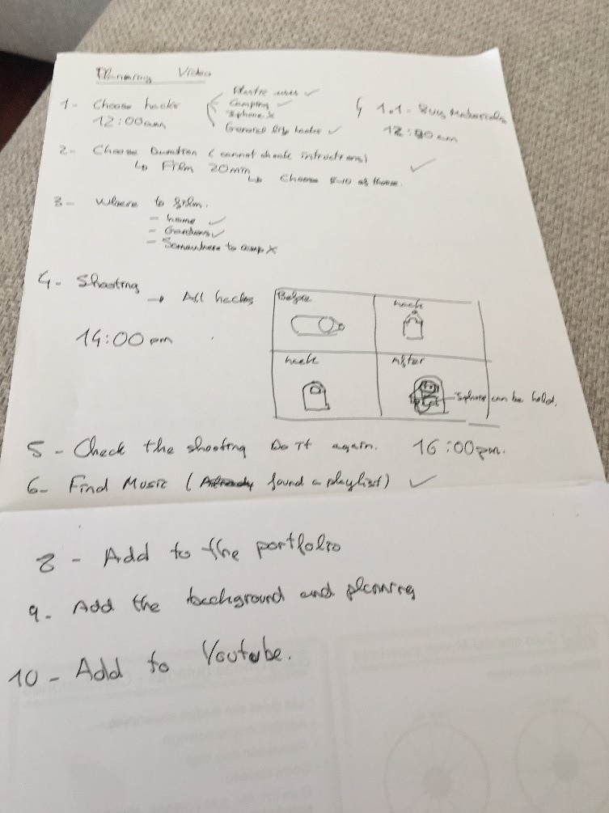
From checking other hacks on YouTube to adding the video to the same platform. This picture was took before any marking. (Step 7 is the editing of the video)
PRE-PRODUCTION
1º- The first step was to check videos on cydia or YouTube for some background, knowledge on how to take the videos and to learn basically. Below is a picture I took while seeing the videos. I decided to use Plastic bottles after watching the video, they are life object we use every day, there are plenty of uses, I even like some of the so I decided to use Plastic Bottles for my video. This video was really helpful
(video)
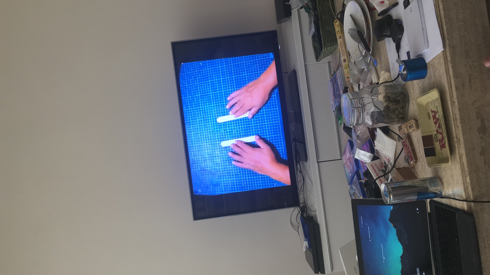
2º&3º) I decided to shoot at least 10 hacks and then will choose which one I will work on for my video. As my house was alone I decided to film it here. Below is a picture of the tricks I film. At first I didn’t knew only one object has to be use for the video so I did plenty of extra life hacks.
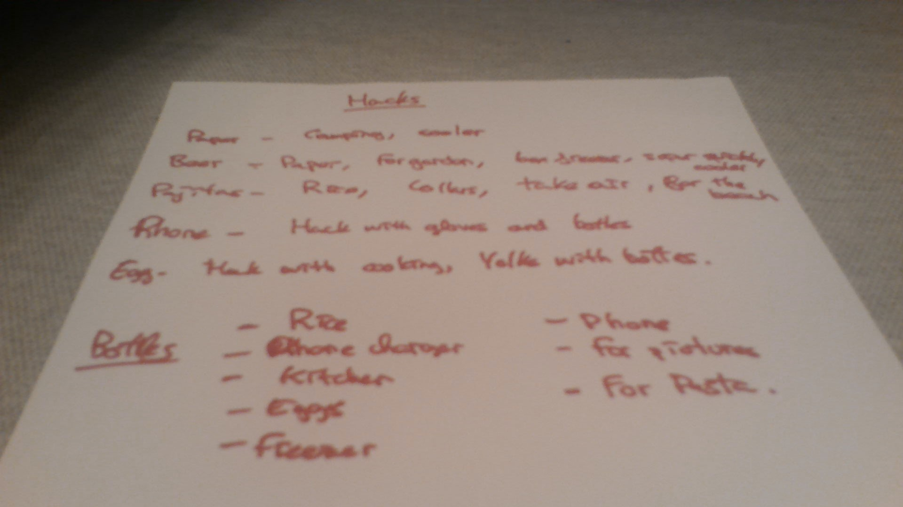
PRODUCTION
4º) I took 15 min approximately of video, more than enough for this 1 minute life hack. As I had plenty of hacks I choose to do more than one (first 5 then 4) trying to adjust it to the minute ask. Below are pictures of my working station and the videos from my computer.
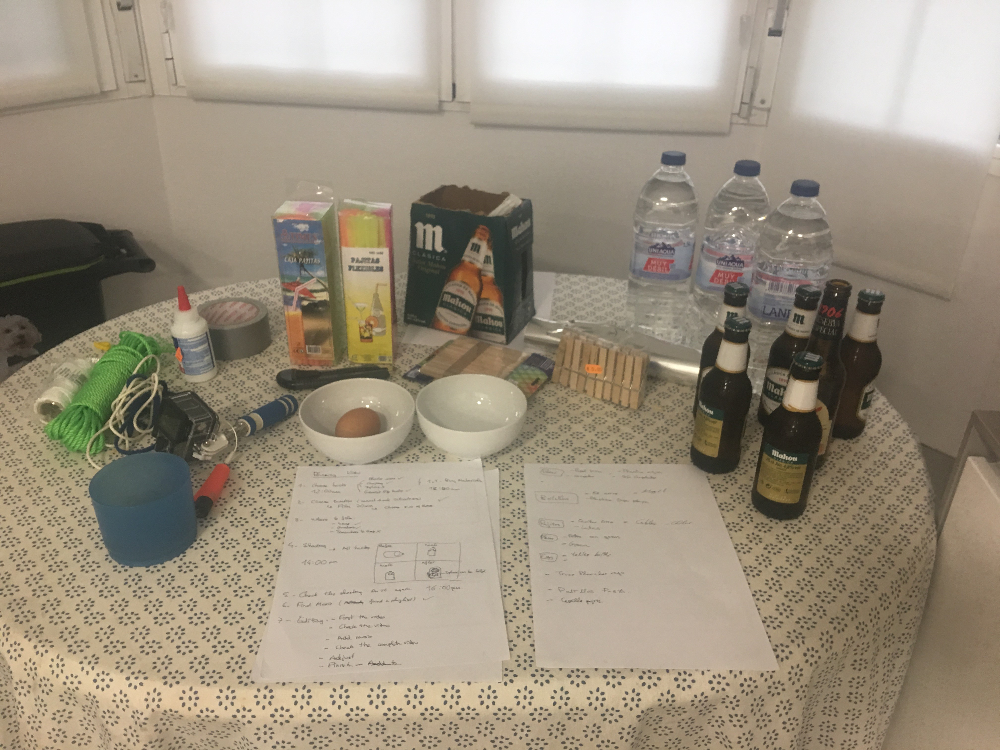
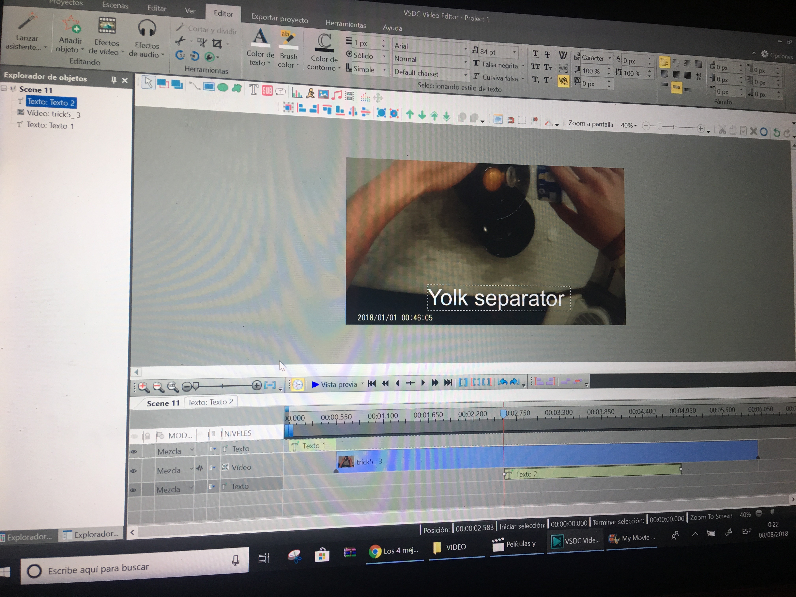
5º & 6º) For the second shooting I basically did the same but quickly ( I didn’t have the intructions first so I shoot way to long). I check the videos and decided to name them so it would be easier ( as you can see on the pictore on top to the right).
7º)For the edition of the video I had a few songs in mind, so the music was already choosen. The songs were: Maroon 5 - Girls Like You ft. Cardi B, Phoenix – Lisztomania, Tobu – Higher.
At first I was using movie maker to edit the video but the quality of it was poor (picture below), I check why and it was simply not the best choice to edit my video. I choose to edit it with VSDC Free Video Editor.
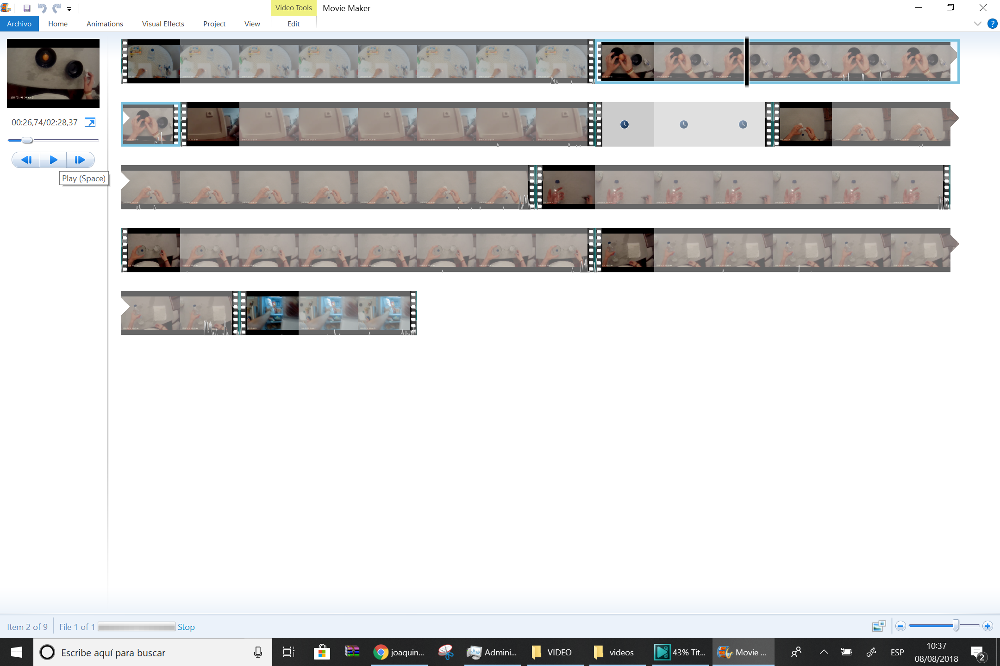
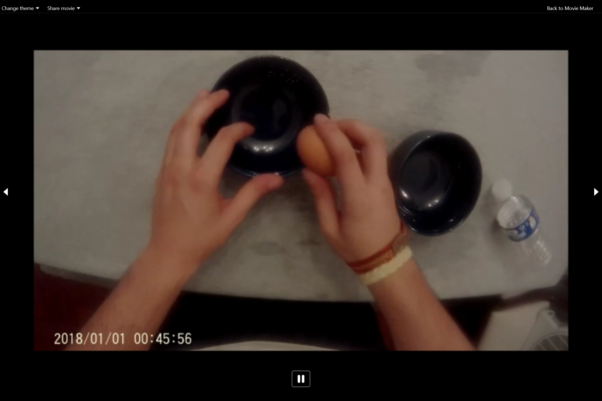
The VSDC Video Editor works with scenes, is not like movie maker that they are all together, here I has to edit each scene as I decided best. I use a total of 14 scenes for this video, in some of them there are mini scenes ( like two videos in one scene).
After editing each scenes and make sure that the minute is not exceed I add the music to the video, as said before I had to cur the song at the exact second in evey scene so the sound is more or less continous. Below are pictures of my work in VSDC Video Editor, and also picture of the video being exported.
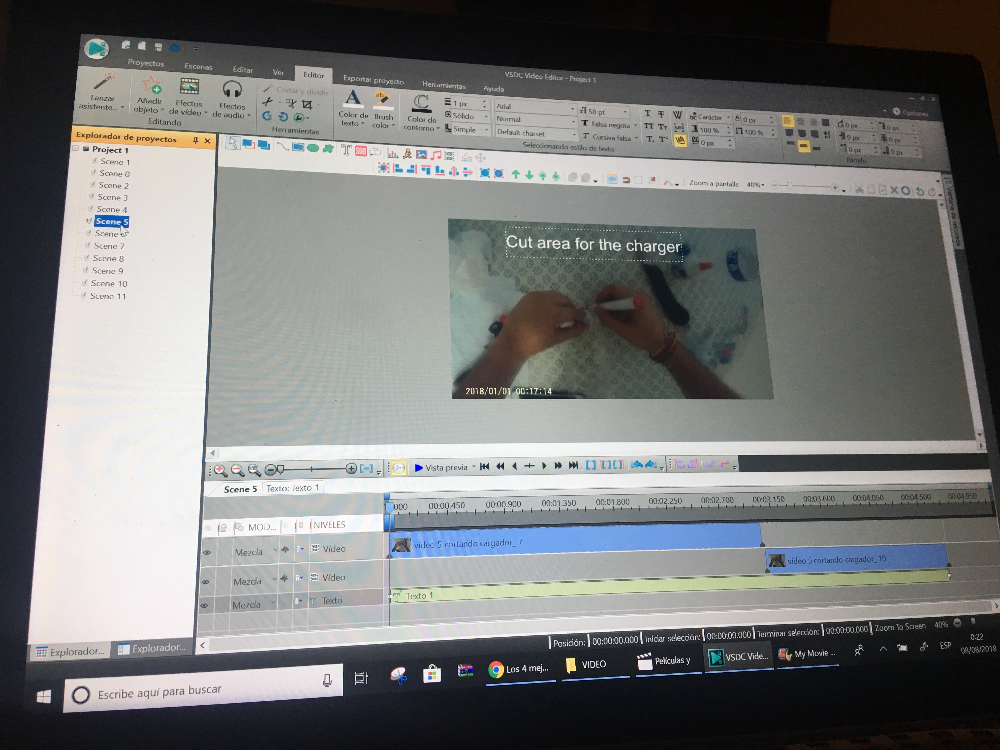
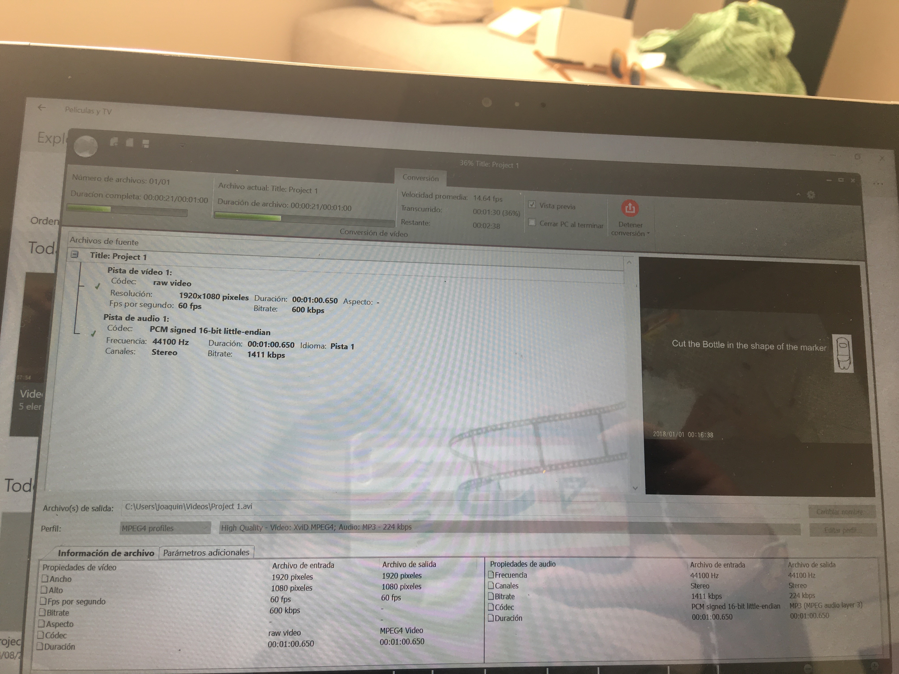
POST PRODUCTION
8º&9º&10ª) For the post production I has to do a couple of changes, in the code of my portfolio on GitHub the code had to be changed, since the video was not working perfectly I decided to embed it with You Tube, also I had to change the evidence in the portfolio and add the proper images. Below are my pictures of my post-production on work.
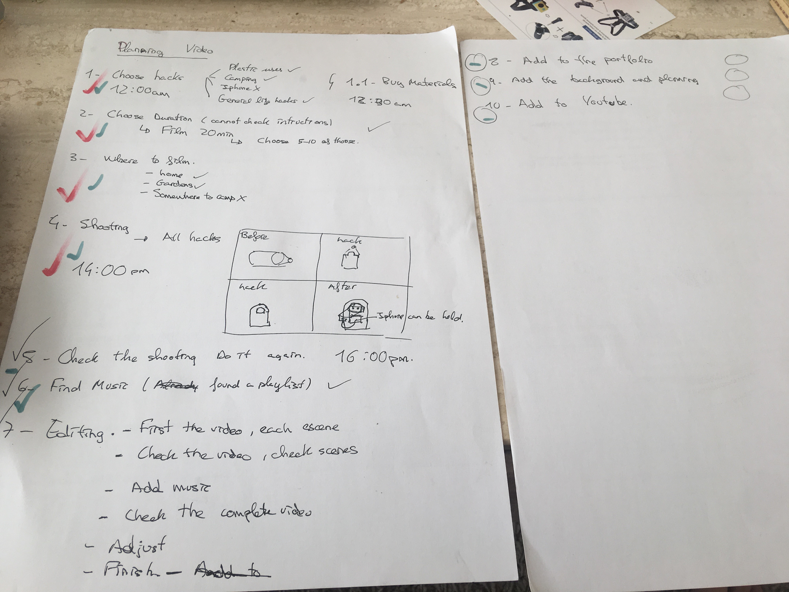
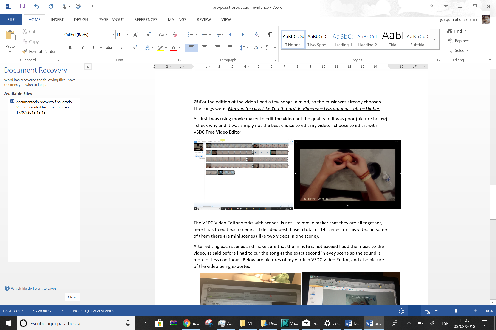
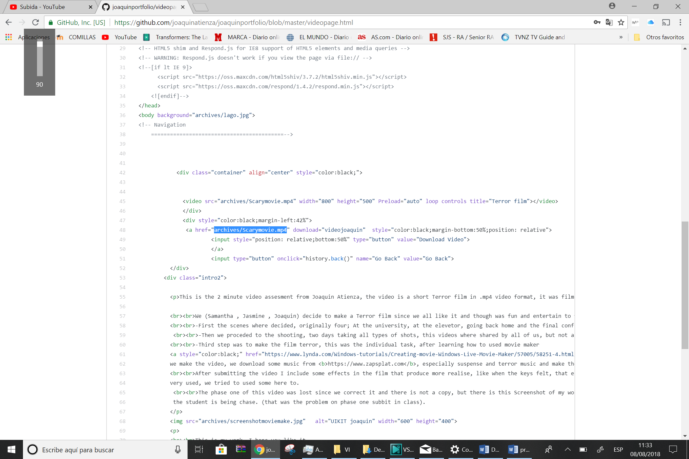
This is my work, I hope you like it.